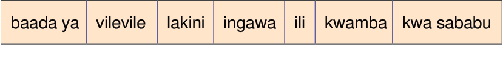

Tumia maneno kutoka kwenye kisanduku kukamilisha kifungu kifuatacho cha habari:

Jora anasoma katika Shule ya Msingi Magige.
Huwahi shuleni kila siku [[blank:item-1]] nyumbani kwao ni mbali na shule.
[[blank:item-2]] kufika shuleni, hufanya usafi mbele ya darasa lao.
[[blank:item-3]], humwagilia maua mbele ya ofisi za walimu.
Mwalimu anapenda kumtolea mfano.
Mwalimu husema, “Kuna wanafunzi wanakaa karibu na shule [[blank:item-4]] hawawahi kama Jora.”
Husema kuwa wanafunzi wengi huchelewa shuleni [[blank:item-5]] ya uvivu tu.
[[blank:item-6]] mwalimu anasisitiza kuwahi, bado kuna wanafunzi wanaochelewa.
Mwalimu amesema kwamba atawaita wazazi ambao watoto wao bado wanachelewa [[blank:item-7]] wajadiliane kuhusu namna ya kukomesha tabia hiyo.
Ni matumaini yake [[blank:item-8]] tabia hiyo itakoma kabisa.